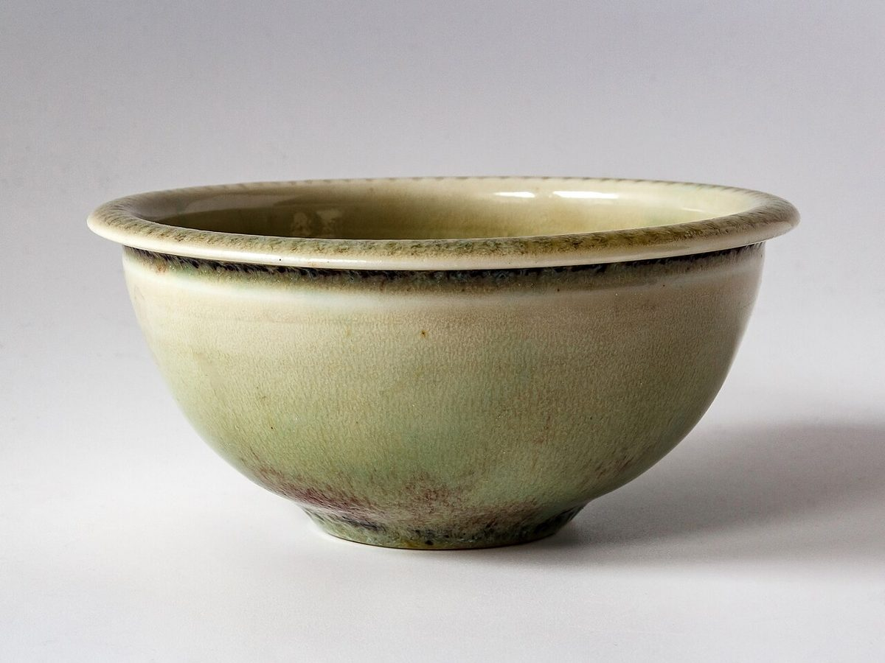
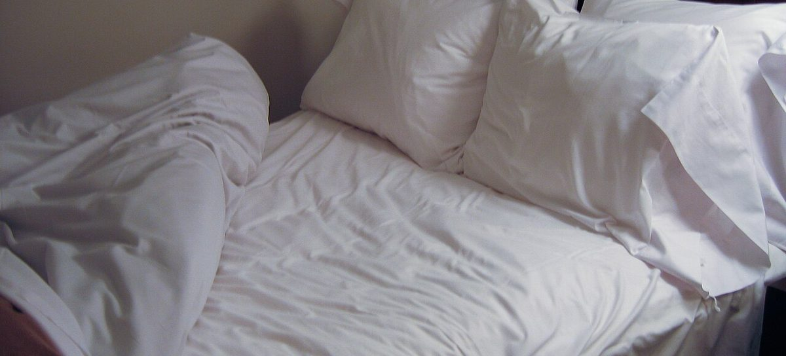

ご案内は準備中です。

メニュー・料金は準備中です。詳細はお電話またはInstagramでお問い合わせください。
制作側の案です。
ご希望やお悩みを、お電話でお伝えください。内容に合わせたご案内は、お電話でご相談ください。

Instagramを見る
営業時間: 準備中(お問い合わせください)
掲載写真はフリー素材のイメージで、店舗の実際の様子ではありません。他地域で撮影されたものや撮影地が不明なものを含みます。